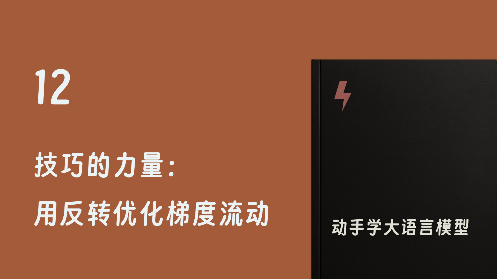

动手学大语言模型：写给程序员的手搓LLM实战指南
吾辈亦有感 更新于：2025.12.28 13:14:18

通过本次任务，你将学会如何使用信息反转改进 Seq2Seq 生成式模型的效果。
动手学：机器学习
动手学：深度学习
动手学：循环神经网络
动手学：Seq2Seq
动手学：Transformer
动手学：GPT
Lecture (PDF)
Book (PDF)
Notebook Launcher
Choose public or private cloud service for "Launch" button.
Select a server
Launch Notebook